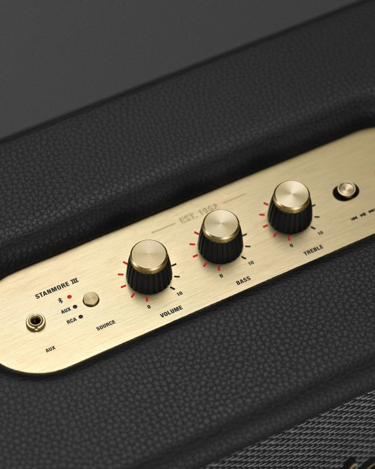
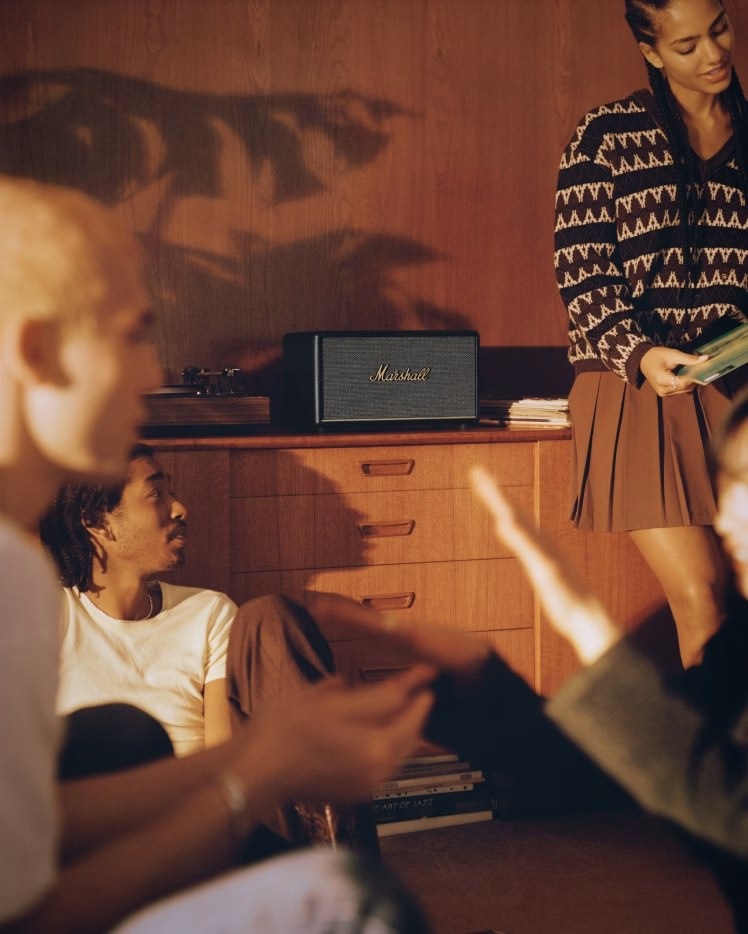

MARSHALL / A FILM IN SOUND
EST. 1962 · LONDON · TURN IT UP
Never stoplistening.
음악이 시작되는 순간, 당신의 세계가 움직입니다.
MARSHALL / SELECTED OBJECTS
Sound,
Sound,
considered.
듣는 순간과 놓이는 공간을 생각합니다.


A CLOSER LISTEN01 — 08 / THE COLLECTION
01 / SELECTED FOR EVERYDAY
A personal
A personal
selection.
귀에 가까이, 혹은 방 한편에.
서로 다른 방식으로 일상에 스며드는 다섯 가지.


SCROLL TO DISCOVER
01 / 05
SCROLL TO EXPLORE
02 / FOUR WAYS TO LISTEN
Find your
Find your
setting.
함께 움직일 소리와
오래 머무를 공간의 소리.

03 / THE LANGUAGE OF CRAFT
Character,
Character,
in every
detail.
직조된 그릴의 결, 손끝에 닿는 노브의 감각.
마샬의 디자인은 시간이 지나도 익숙한 디테일로
기억됩니다.
A STUDY IN SOUND
Made to be
Made to be
felt.
눈으로 보고, 손으로 느끼고.
음악을 가까이 만드는 작은 디테일.

04 / FIELD NOTES
Beyond
저널 둘러보기 ↗
Beyond
the object.

05 / THE LISTENING ROOMA SPACE. A RECORD. A MOMENT.
MAKE ROOM FOR MUSIC
Stay a little.
Stay a little.
Listen closer.
하루의 속도를 낮추고, 좋아하는 음악을 틀어보세요.
익숙한 방도 조금 다른 공간이 됩니다.
AT HOME WITH MARSHALLIN FOCUS / STANMORE III ↗
06 / YOUR NEXT SOUND
Find your
Find your
kind of loud.
어디서, 어떻게 듣고 싶으신가요?
당신의 하루에서 시작하는 작은 선택.
THE RIGHT SOUND
STARTS WITH YOU.PERSONAL / PORTABLE / HOME
STARTS WITH YOU.PERSONAL / PORTABLE / HOME